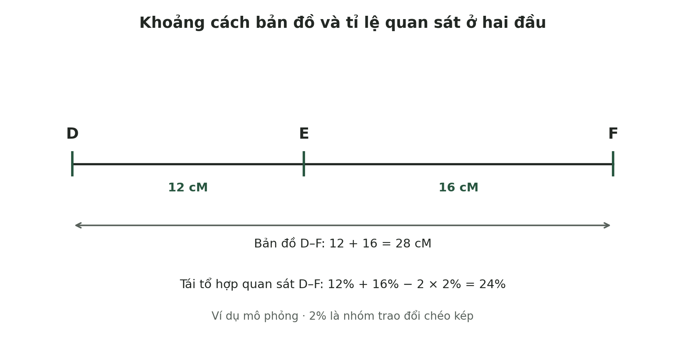

Bản đồ liên kết và biến đổi nhiễm sắc thể
Di truyền · Liên kết, tái tổ hợp, lập bản đồ và biến đổi NST · 9 trắc nghiệm và 1 tự luận
Bắt đầu học ↓Học buổi rút gọn · đọc hình và làm 10 câu · Học trọn chương và làm bộ 80 trắc nghiệm, 15 tự luận
Sau buổi này
- Xác định pha allele và gen giữa từ lai phân tích ba điểm.
- Tính tỷ lệ tái tổ hợp, khoảng bản đồ và mức cản trở.
- Phân loại biến đổi số lượng và cấu trúc NST từ dữ kiện.
Gợi nhớ · 5 phút
Giải thích vì sao trao đổi chéo kép có thể khôi phục tổ hợp hai locus ngoài. Vẽ lại bảng pha và đánh dấu allele ở giữa.
Đọc hình và nắm kiến thức · 20 phút
Quan sát hình minh họa

Ba cột slide giữ thứ tự gen và màu của NST tương đồng, giúp phân biệt hai kiểu trao đổi đơn với trao đổi kép.
Quan sát · Dò các chữ A, B, C trên cặp NST đầu và đối chiếu cột trao đổi kép với hai cột trao đổi đơn.
Dự đoán · Nếu che locus B, các giao tử trao đổi kép còn nhận ra là tái tổ hợp ở A và C không?
Mở giải thích sau khi dự đoán
Trao đổi kép có thể trả lại pha bố mẹ ở hai đầu, trong khi đổi allele tại B. Vì vậy tỷ lệ quan sát trực tiếp A–C có thể nhỏ hơn số bản đồ cộng hai khoảng.
- Hai lớp lớn
ABC và abc cho pha bố mẹ.
- Hai lớp hiếm
AbC và aBc đổi B so với bố mẹ tương ứng, nên B ở giữa.
- Bản đồ
A ← 12 cM → B ← 19 cM → C, theo quy ước bài ba điểm.
- Đối chiếu hai đầu
DCO đổi B nhưng giữ A–C cùng pha bố mẹ. Có 27% tái tổ hợp khi chỉ xét A và C.
Che phần bản đồ, tự tìm pha và locus giữa từ số đếm trong bảng bài tập.
Đọc hình để tự rút ra cơ chế
Quan sát · Trong phép lai phân tích ba locus, hai nhóm phổ biến nhất gợi ý pha bố mẹ. Hai nhóm hiếm nhất phù hợp với trao đổi chéo kép trong bộ dữ liệu lý tưởng.
Dự đoán · Ghép mỗi nhóm hiếm với nhóm bố mẹ tương ứng. Kiểu thay đổi nào giúp xác định locus giữa?
Mở giải thích sau khi dự đoán
Khi hai allele đầu và cuối giữ tổ hợp như bố mẹ mà allele ở một locus đổi, locus đổi là locus giữa trong mô hình ba điểm. Cần kiểm các giả định về nhận diện và độ sống trước khi dùng tần số làm bản đồ.

Ví dụ riêng với ba locus D, E và F. Hai đoạn ngắn được ước lượng gần bằng phần trăm tái tổ hợp của chúng; giá trị cM là xấp xỉ.
Quan sát · Hai đoạn cho 12% và 16% tái tổ hợp. Các cá thể trao đổi chéo kép chiếm 2% và được tính ở cả hai đoạn.
Dự đoán · Khi chỉ quan sát D và F, nhóm trao đổi chéo kép có làm đổi tổ hợp hai đầu không? Tự dự đoán lý do 24% khác 28 cM.
Mở giải thích sau khi dự đoán
Hai trao đổi chéo đổi tổ hợp ở từng đoạn nhưng có thể giữ nguyên tổ hợp D–F như ở bố mẹ. Khi tính phần trăm tái tổ hợp hai đầu, cần loại hai lần đóng góp của nhóm 2%, nên được 12% + 16% − 4% = 24%. Khoảng cách bản đồ xấp xỉ bằng tổng hai đoạn.
Đọc pha và locus giữa
Trong lai phân tích, đối tác đồng hợp lặn cho cùng một loại giao tử. Hai lớp phổ biến nhất cho pha bố mẹ và hai lớp hiếm nhất gợi ý trao đổi chéo kép (DCO) trong bài lý tưởng. Đối chiếu mỗi DCO với lớp bố mẹ phù hợp. Locus đổi allele trong khi hai đầu giữ pha bố mẹ là locus giữa. Kiểm giả thiết độ sống và cách nhận diện kiểu hình trước khi áp dụng quy tắc này.
Bài giải mẫu · từ số ruồi tới cM
Bước 1 · Basis là 1.000 con. Hai lớp bố mẹ ABC/abc, hai DCO AbC/aBc. B đổi so với lớp bố mẹ tương ứng, cho thứ tự A–B–C.
Bước 2 · A–B: (55+45+10+10)/1.000 = 0,12. B–C: (90+80+10+10)/1.000 = 0,19. Tính cả DCO ở từng khoảng và đổi sang %, cho gần đúng 12 và 19 cM.
Bước 3 · DCO kỳ vọng với hai khoảng độc lập = 1.000 × 0,12 × 0,19 = 22,8 con. Hệ số trùng hợp C = 20/22,8 ≈ 0,877. Cản trở I = 1−C ≈ 0,123, tương ứng 12,3%.
Kiểm · Khoảng bản đồ A–C là 12+19=31 cM. Tần số tái tổ hợp trực tiếp của A–C chỉ là (100+170)/1.000 = 27% vì DCO giữ pha bố mẹ ở hai đầu. Trên các tỷ lệ, 0,31−0,27 = 2 × 20/1.000.
Phân loại biến đổi NST
Mất đoạn, lặp đoạn, đảo đoạn và chuyển đoạn làm thay đổi cấu trúc. Lệch bội thay đổi số bản sao của một hoặc vài NST, ví dụ 2n+1. Đa bội thay đổi cả bộ NST, ví dụ 3n. Không phân ly ở giảm phân có thể tạo giao tử thừa hoặc thiếu NST. Đọc ảnh NST để phân loại hiện tượng trước khi suy ra cơ chế phát sinh.
Liên hệ thực tế
Dấu chuẩn di truyền có thể giúp dự đoán mẫu đồng di truyền với tính trạng trong phép lai. Muốn biết khoảng cách vật lý phải đối chiếu bản đồ trình tự vì tần suất tái tổ hợp thay đổi theo vùng NST.
Tự kiểm · 25 phút
Dựng bản đồ A–B–C từ ruồi lai phân tích
Ruồi cái dị hợp ba locus lai với ruồi đực abc/abc. Các lớp con có độ sống tương đương và được nhận diện đúng. Chỉ xét lớp không trao đổi, trao đổi đơn và trao đổi kép. Ảnh NST ở mẫu ruồi đối chiếu Z cho thấy Z có thêm đúng một NST so với mẫu thường 2n.

Biểu tượng biểu diễn từng NST. So sánh số bản sao ở các nhóm 1–4.
| Tổ hợp nhận từ ruồi cái | Số con |
|---|---|
| ABC | 360 |
| abc | 350 |
| Abc | 55 |
| aBC | 45 |
| ABc | 90 |
| abC | 80 |
| AbC | 10 |
| aBc | 10 |
Đối chiếu và hẹn ôn · 10 phút
Chọn một chỗ còn phân vân. Giải thích lại bằng lời của mình rồi thử một câu cùng dạng.
Mở đáp án và giải thích · DT-06
Xem trong bộ bài tập của chủ đề
Học tiếp theo slide